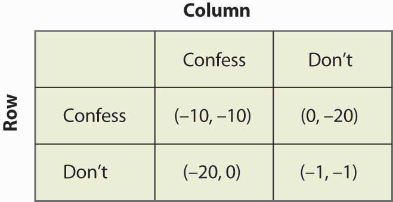
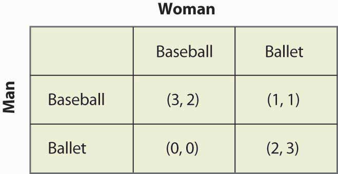
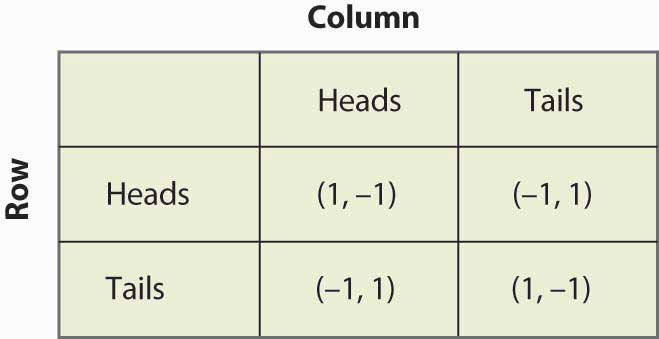

In a Nash equilibriumSituation in which a player chooses the strategy that maximizes his or her expected payoff, given the strategies employed by others., each player chooses the strategy that maximizes his or her expected payoff, given the strategies employed by others. For matrix payoff games with two players, a Nash equilibrium requires that the row chosen maximize the row player’s payoff (given the column chosen by the column player) and the column, in turn, maximize the column player’s payoff (given the row selected by the row player). Let us consider first the prisoner’s dilemma, which we have already seen. Here it is illustrated once again in Figure 16.10 "Prisoner's dilemma again".
Figure 16.10 Prisoner's dilemma again
Given that the row player has chosen to confess, the column player also chooses to confess because –10 is better than –20. Similarly, given that the column player chooses confession, the row player chooses confession because –10 is better than –20. Thus, for both players to confess is a Nash equilibrium. Now let us consider whether any other outcome is a Nash equilibrium. In any other outcome, at least one player is not confessing. But that player could get a higher payoff by confessing, so no other outcome could be a Nash equilibrium.
The logic of dominated strategies extends to Nash equilibrium, except possibly for ties. That is, if a strategy is strictly dominated, it can’t be part of a Nash equilibrium. On the other hand, if it involves a tied value, a strategy may be dominated but still be part of a Nash equilibrium.
The Nash equilibrium is justified as a solution concept for games as follows. First, if the players are playing a Nash equilibrium, no one has an incentive to change his or her play or to rethink his or her strategy. Thus, the Nash equilibrium has a “steady state” in that no one wants to change his or her own strategy given the play of others. Second, other potential outcomes don’t have that property: If an outcome is not a Nash equilibrium, then at least one player has an incentive to change what he or she is doing. Outcomes that aren’t Nash equilibria involve mistakes for at least one player. Thus, sophisticated, intelligent players may be able to deduce each other’s play, and play a Nash equilibrium.
Do people actually play Nash equilibria? This is a controversial topic and mostly beyond the scope of this book, but we’ll consider two well-known games: tic-tac-toe (see, for example, http://www.mcafee.cc/Bin/tictactoe/index.html) and chess. Tic-tac-toe is a relatively simple game, and the equilibrium is a tie. This equilibrium arises because each player has a strategy that prevents the other player from winning, so the outcome is a tie. Young children play tic-tac-toe and eventually learn how to play equilibrium strategies, at which point the game ceases to be very interesting since it just repeats the same outcome. In contrast, it is known that chess has an equilibrium, but no one knows what it is. Thus, at this point, we don’t know if the first mover (white) always wins, or if the second mover (black) always wins, or if the outcome is a draw (neither is able to win). Chess is complicated because a strategy must specify what actions to take, given the history of actions, and there are a very large number of potential histories of the game 30 or 40 moves after the start. So we can be quite confident that people are not (yet) playing Nash equilibria to the game of chess.
The second most famous game in game theory is a coordination game called the battle of the sexesA coordination game that involves a married couple who are going to meet each other after work but haven’t decided where they are meeting.. The battle of the sexes involves a married couple who are going to meet each other after work but haven’t decided where they are meeting. Their options are a Baseball game or the Ballet. Both prefer to be with each other, but the Man prefers the Baseball game and the Woman prefers the Ballet. This gives payoffs as shown in Figure 16.11 "The battle of the sexes".
Figure 16.11 The battle of the sexes
The Man would prefer that they both go to the Baseball game, and the Woman prefers that both go to the Ballet. They each get 2 payoff points for being with each other, and an additional point for being at their preferred entertainment. In this game, iterated elimination of dominated strategies eliminates nothing. One can readily verify that there are two Nash equilibria: one in which they both go to the Baseball game and one in which they both go to the Ballet. The logic is this: If the Man is going to the Baseball game, the Woman prefers the 2 points she gets at the Baseball game to the single point she would get at the Ballet. Similarly, if the Woman is going to the Baseball game, the Man gets three points going there versus zero at the Ballet. Hence, going to the Baseball game is one Nash equilibrium. It is straightforward to show that for both to go to the Ballet is also a Nash equilibrium and, finally, that neither of the other two possibilities in which they go to separate places is an equilibrium.
Now consider the game of matching penniesA child’s game in which the sum of the payoffs is zero., a child’s game in which the sum of the payoffs is zero. In this game, both the row player and the column player choose heads or tails, and if they match, the row player gets the coins, while if they don’t match, the column player gets the coins. The payoffs are provided in Figure 16.12 "Matching pennies".
Figure 16.12 Matching pennies
You can readily verify that none of the four possibilities represents a Nash equilibrium. Any of the four involves one player getting –1; that player can convert –1 to 1 by changing his or her strategy. Thus, whatever the hypothesized equilibrium, one player can do strictly better, contradicting the hypothesis of a Nash equilibrium. In this game, as every child who plays it knows, it pays to be unpredictable, and consequently players need to randomize. Random strategies are known as mixed strategiesRandom strategies. because the players mix across various actions.